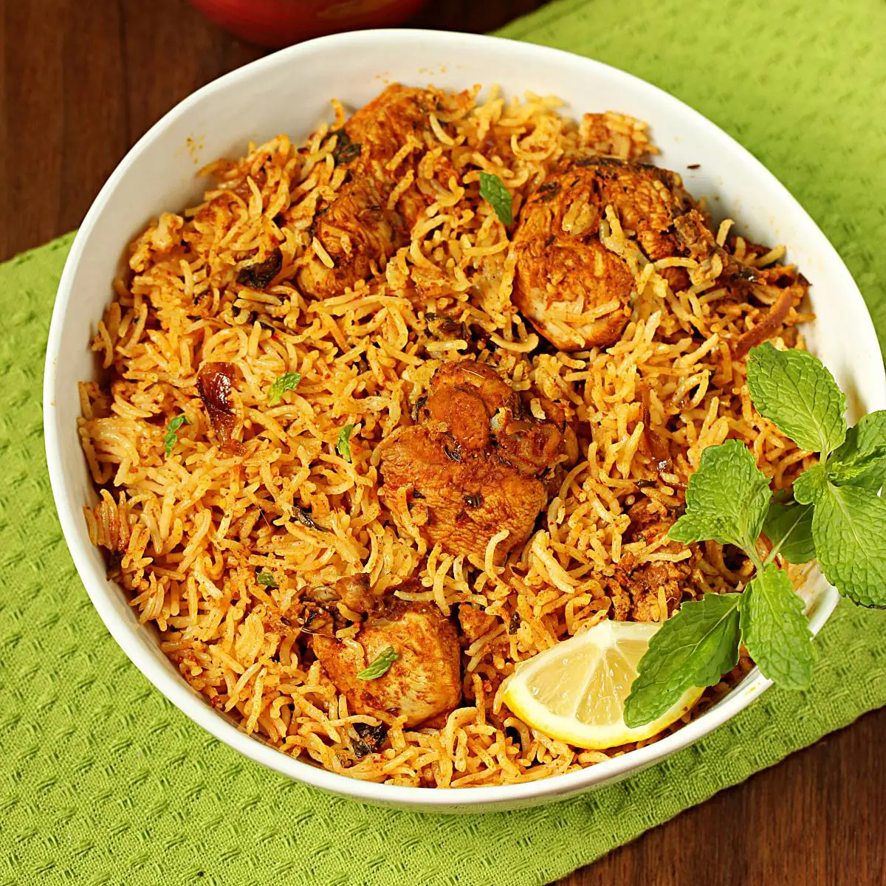

Biriyani

Description
Biryani is one of the most popular rice dishes & traditionally it is cooked adapting the process of dum pukht, meaning “steam cooked over low fire”.
Ingredients (serves 3)
- ¼ cup oil
- 2 cups (200 grams) sliced onions
- ½ cup yogurt/curd
- 1 tbsp. Lemon juice
- 1½ tablespoon Ginger Garlic paste (both in equal quantities)
- 1 green chili deseeded and slit (leave out for low heat)
- ½ teaspoon salt
- ¼ teaspoon Turmeric Powder
- ½ to ¾ tablespoon Kashmiri Red Chili Powder
- 1¼ tablespoon Biryani masala
- ½ tablespoon coriander powder
- ¼ tablespoon roasted cumin powder
- 2 tablespoons mint leaves fine chopped
- 2 tablespoons coriander leaves fine chopped (optional)
- ½ kg, skinless bone-in or boneless, large pieces such as thighs, drumsticks, legs or breast
- 1½ cups aged basmati rice
- ½ tablespoon oil
- ¾ to 1 tablespoon salt
- 4 cardamoms
- 4 cloves
- 1 bay leaf
- 2 inch cinnamon
- 1 star anise
- ¼ tsp shahi jeera
- ½ mace
- 1 pinch (10 to 12) saffron strands or natural orange food color as needed
- 2 tablespoons hot milk + 2 tablespoons hot water
- 1 to 2 pinches biryani masala or garam masala
- 1 to 2 tbsps mint and coriander leaves
- 1½ tbsps melted ghee
- Wash and peel the onion. Slice them medium thin and even so they fry evenly. Cut & discard the basal plate of the onion so the slices separate. Measure the slices to make them 2 cups
- Pour ¼ cup oil to a wide pan/Dutch oven and heat it on a medium flame. Add the onions and sauté constantly on a medium heat, until they turn evenly golden to light brown, but not deep brown or burnt. It takes me about 13 to 14 minutes for this entire task. 7 mins on a medium heat, 4 mins on a low heat and 2 to 3 mins with the stove turned off. However this can vary for you.
- Remove them to a plate & cool completely. They will turn darker after cooling so do not over fry them as they turn bitter in a few seconds.
- This step is optional. A lot of people prefer to use this fried onion oil in the marinade as it is flavored. But I discard the oil in the pot/ Dutch oven. I also prefer to squeeze out the excess oil from the fried onions using fingers. Pat them well with kitchen tissues to remove most of the oil. Once done they look like seen in the pictures below. This makes ½ cup (8 tbsps) golden onions.
- Mix together yogurt, lemon juice, ginger garlic, green chili, oil, salt, turmeric powder, Kashmiri red chilli powder, biryani masala (or garam masala), coriander powder, roasted cumin powder, mint leaves and coriander leaves. Mix all the ingredients well and taste test for salt and spice/heat. Adjust of required.
- Add chicken. I also make gashes over the larger pieces of chicken. Marinate for a minimum of 30 minutes to overnight in the refrigerator. Keep it covered while it marinates.
- Saute chicken for 4 to 5 minutes on a medium heat.
- Reserve 2 tablespoons brown onions for later and add the rest here (about 6 tbsps). Pour ¼ cup hot water and mix well.
- Cover and cook on a medium heat for 10 to 15 minutes (depending on the size and kind of chicken used, organic and bone-in chicken takes longer). Chicken should be almost cooked through (95% cooked). Turn off the heat.
- While your chicken gravy cooks, rinse rice well thrice and soak for a minimum of 15 mins (if required, read instructions on your rice pack). Pour 6 cups of water to a large pot and add the following whole spices. You dont need all of them add whatever you have in hand. Cardamoms, cloves, bay leaf, cinnamon, star anise, shahi jeera and ½ mace.
- Bring the water to a rolling boil, reduce the heat to medium (keep it boiling), cover the pot and cook for 5 minutes. If you dont like whole spices in your biryani, optionally fish out as many spices as you want at this stage using a spider. Discard or save some for garnish.
- Pour oil and add drained rice & salt. Bring the water to a rolling boil again and cook on high heat for 5 mins, until 90% done. Rice should be firm, almost cooked but have a bite to it and not fully cooked. When you press down the rice grain it should break and not turn mushy. Drain to a colander immediately.
- Soak saffron strands or natural orange food color as needed in 2 tablespoons hot milk + 2 tablespoons hot water (or rice cooked water). Also prepare 2 tbsps chopped mint/coriander leaves, 2 tbsps fried onions, 1 to 2 pinches biryani masala and ghee.
- Give a good stir and spread the chicken in the pot evenly. This is the right consistency.
- Layer 1 tablespoon brown onions and then rice all over the chicken. Sprinkle 1 to 2 pinches biryani masala, mint coriander leaves, ghee and saffron milk water & the rest of the fried onions.
- If you are not using a Dutch oven, seal the pot with a foil or a moist clean cloth (not dry cloth). Turn on the flame on a medium heat for 5 to 6 minutes. Lower the heat to low and dum cook for another 18 to 20 minutes. Turn off and rest for 10 minutes.
- When you open the pot, your rice grains should have curled meaning the rice has been dum cooked well. If not, next time you may increase the cook time. The cook time changes slightly with the kind and size of stove/burner.
- Garnish with more fried onions and coriander/mint leaves if you want. Serve Chicken biryani with a large rice paddle in a way that each portion gets the chicken from the bottom and the rice from top in layers.